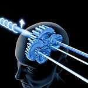
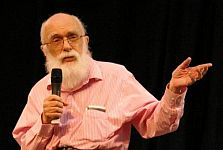

“Ateo, en el estricto y propicio sentido de la palabra, es aquel que no cree en la existencia de un dios o en un ser superior a la naturaleza”
—Richard Watson
“¿La Nueva Era? Es la vieja era metida en el microondas durante 15 segundos”
—James Randi

Cerrada y fría. Impía y hereje. Agresiva y ofensiva. Hija de Satanás.
No he recibido esos titulares sobre mi persona vía telepatía o a través de un profeta, no; los he leído en cartas en Internet, me los han dicho en la cara, acusándome de defender “demasiado” a las minorías (haitianos, homosexuales, ateos) o de no creer en nada (ni sobrenatural ni paranormal). El insulto suele provenir de personas que han perdido parte parcial o completa de la capacidad hacia la tolerancia y no soportan a los que apoyan ideas muy distintas.

Es imposible asegurar que seremos una especie que manifiesta la misma opinión. De hecho, leer el libro The Moral Landscape se convierte en un tipo de recordatorio sobre lo difícil que es esta empresa. Sam Harris intenta convencer a sus lectores sobre lo que es el bienestar; el bienestar de todos, y a pesar de que estoy de acuerdo con sus definiciones del mismo, existen miles de millones de personas que no lo están, y no sólo afuera de sus dominios. De hecho, muchos ateos dicen haberse alejado de Harris porque no están de acuerdo con sus definiciones, piensan en la relatividad cultural y creen que la gente se acostumbra a todo; hasta a ser niñas asesinadas por no estar de acuerdo con sus adultos esposos.
Yo sería una de las muertas.
Lo más fácil es acostumbrarse a lo que acomoda. Las ideas novedosas y que resultan ‘poco naturales’ no suelen ser placenteras, más bien, son una dosis de alta inteligencia en la evolución de la especie y existen sólo para una minoría; además, son asociadas con el ateísmo, la libertad y hasta con la exclusividad sexual en los hombres. Ciertamente, es complicado adoptar un pensamiento o un estilo de vida diferente al de la mayoría, especialmente cuando sabes que estar de acuerdo trae mucha más armonía en el grupo; sin embargo, el pensamiento distinto es necesario para el cambio y la transformación; por eso se origina.
“La gente más inteligente suele adoptar preferencias y valores novedosamente evolutivos. Sin embargo, la inteligencia no está correlacionada con preferencias y valores tan viejos que fueron formados por la evolución durante millones de años. La inteligencia general, es decir, la habilidad para pensar y razonar, dotó a nuestros ancestros con ventajas para resolver problemas novedosos para los que no tenían soluciones innatas”, explica Satoshi Kanazawa, psicólogo evolucionista en la Escuela de Londres sobre Economía y Ciencias Políticas. “Como resultado, más gente inteligente suele reconocer y entender las entidades y situaciones novedosas, y muchas de ellas tratan sobre preferencias, valores y estilos de vida”.
Otros estudios de Kanazawa y especialistas en el tema, han encontrado grandes titulares para los inteligentes: suelen ser nocturnos, es decir, se despiertan y se van a dormir más tarde; también desprendidos, les importa el bienestar de otras especies y de personas que no están relacionadas con ellos. De hecho, un estudio realizado en Estados Unidos descubrió que los adolescentes que se consideran socialistas suelen tener un cociente de inteligencia mayor (106) que aquellos que se identificaban como conservadores (95). Y hasta suelen rechazar tipos de música.

Con las creencias ocurre igual. “La religión es un subproducto de la tendencia humana de percibir un agente y su intención como causas de eventos. Los creyentes ven ‘la mano de Dios’ intervenir en fenómenos naturales. Es imposible olvidar que los seres humanos han evolucionado para ser paranoicos y creen en Dios porque son paranoicos”, explica Kanazawa. “Esa parcialidad innata hacia la paranoia sirvió bien a los humanos cuando la auto-preservación y la protección de las familias dependían de vigilancia extrema. Hoy ya no; de hecho, los niños más inteligentes crecen en contra de la tendencia evolutiva de creer en Dios y por eso son ateos”.
Lo mismo ocurre con la exclusividad sexual en los hombres. Este fenómeno no es igual en mujeres ya que tanto en la poligamia como en la monogamia en general la mujer debe ser exclusiva para el hombre, no así el macho. Por lo tanto, la exclusividad hacia una sola mujer es un paso positivo en la evolución del hombre, es un camino que puede alejarlo aún más de los aspectos conjugados en su biología para las funciones principales de la vida que eran la reproducción y la supervivencia. Actualmente, otras cosas son necesarias y más importantes.

Efectivamente, hemos visto que el cerebro ha ido evolucionando por partes y el desarrollo de una corteza prefrontal trajo aún más ventajas: nos permitió pensar de forma crítica y racional. Procesos vitales ocurrieron que nos dieron el beneficio de poseer una red neuronal como la que tenemos, y uno de ellos ha sido la inteligencia. Un equipo de colaboración entre Estados Unidos y España observó el año pasado las estructuras cerebrales de la inteligencia. Los científicos pensaban en aquellas preguntas que aún plagan las ramas sobre la cognición como ¿qué es la inteligencia? y ¿cómo la medimos?; para avanzar un poco más con el trabajo de resolverlas decidieron estudiar pacientes con lesiones cerebrales que hayan tomado pruebas de cociente de inteligencia. Los investigadores encontraron que la inteligencia se encuentra distribuida, que no hay zonas que la clamen de forma absoluta sino que, precisamente, tener inteligencia general depende de factores neuronales de aleación.
“Puede resultar que la inteligencia general no depende para nada de áreas específicas en el cerebro sino que tiene que ver con cómo funciona el cerebro completo. De hecho, regiones particulares y conexiones que encontramos van bien en línea con una teoría existente donde la inteligencia es llamada ‘integración frontal-parietal’ que dice que la inteligencia depende de la habilidad del cerebro para integrar varios procesos distintos”, explica Ralph Adolphs, profesor de neurociencias en el Instituto de Tecnología de California (Caltech).
Pero la educación y la información no producen a una persona racional, desafortunadamente. A pesar de un aumento significativo en el conocimiento general, 51.8% de personas con un título académico cree en la telepatía en comparación con el 29.6% de gente sin educación. Aparentemente, la inteligencia general y la curiosidad hacia lo nuevo son más importantes que la información o la educación.
Especialmente porque el pensamiento novedoso no gusta; la gente se siente despeinada frente a él. Las personas prefieren pensar que el amor es mágico, que existe un más allá y no hay muerte ni final, que los humanos tenemos espíritu y alma, que el cerebro sólo explota un porcentaje, que la magia existe y que esa magia muchas veces viene vestida de poderes paranormales que nosotros, los cerrados ateos, somos incapaces de entender ni por telepatía.
Esa es la visión sumada del mundo; la mayoría de la gente cree en tonterías: en todas, en combinaciones de ellas o en una en especial. No creer en alguna es aceptado pero no dejar un espacio abierto para la existencia de cualquier cosa no está considerado bien. La gente te apunta y dice que estás equivocado; ni ellos notan que son los mismos dioses con diferentes disfraces. Ni siquiera cuando adoptan el ateísmo como visión, sin realmente serlo.
Eso de que los ateos deberíamos de creer en algo es un oxímoron, una contradicción en sí misma: “soy ateo y no creo en dioses, sin embargo, creo”. Definiciones particulares admiten el agnosticismo o el magufismo dentro del ateísmo; las cubren con pañales filosóficos, anti-teístas o débiles, indicando que son distintos tipos de ateísmo. Para mí, el ateo creyente es quimérico, es como considerar que el vegetariano come pollo o que las vírgenes se embarazan.
Ni sobrenatural ni paranormal
Sin ventanas abiertas

El progreso está basado en la ciencia. La gente conoce y se mueve por el mundo utilizando objetos cada vez más distintos. Desarrollamos la electricidad y hoy tenemos un sinnúmero de aparatos basados en ella, desplegamos el teléfono y hoy es parte de nuestro mundo androide, inventamos el cine y actualmente navegamos por diferentes formas de producción y maneras de ver la finalizada película; podemos poner el mismo ejemplo en un sinnúmero de ramas, como la imperfecta medicina que no deja de entregarnos, enredada en el mismo mundo en el que todos vivimos, nuevos tratamientos para nuestras dolencias. El desarrollo científico mueve civilizaciones y las hace cambiar; no es una herramienta perfecta, al final, está controlada por humanos, pero es lo mejor que tenemos para conocernos e intentar vivir mejor; y la usamos, la usamos todo el tiempo.
Sin embargo, muchos abandonamos las religiones sin saber sobre ciencia. La experiencia de que los dioses no existen llegaba a través del ‘sentido común’, de examinar y analizar las religiones que han existido en el mundo y de observar el estado de las especies y del planeta mismo, esas situaciones pueden confirmar la inexistencia de los dioses y la capacidad humana para inventar y engañar. Pero muchos sólo erradican unos dioses para formar otros, para ello, la adquisición de información a medias o errada es muy importante.
Precisamente, el conocimiento mal adquirido en las academias puede llevar a las pseudociencias. James Randi aseguró una vez que la nueva era es la vieja era sólo que modernizada, anclada en mitos científicos o en lo que la ciencia desconoce; nada como un buen misterio para atrapar a un ser humano. Algunos gurúes, por ejemplo, hoy hablan de la cuántica como si esta novedosa ciencia ofreciera una unión neuronal con todos los humanos y el Universo; estos personajes se refieren al desconocimiento cosmológico, en pleno siglo xxi, como si fuera evidencia de la existencia de poderes paranormales donde los seres humanos tenemos un papel protagónico. Pero no es así…sin embargo, la persona lo lee, asegura entender la física cuántica y produce así un nuevo ‘dios’.

El ateo puede ser amante de cualquier cosa, hasta de los escritorios si así le place, pero no de situaciones donde se requiera la fe. Lo sobrenatural y lo paranormal sólo se alcanzan a través de la creencia irracional: si el individuo tiene menos información es más probable que crea en los dioses que le enseñaron y que mantienen sus iglesias; si tiene más educación vestirá a esos dioses con disfraces más modernos y los ubicará en esos espacios que la ciencia no ha llenado y que él dotará de magia. No importa si todo el historial científico esté desprovisto de evidencias para sus dioses o que ese mismo historial haya descubierto evidencias que no tienen nada que ver con el sortilegio y la fe, lo importante es que la ciencia no lo sabe todo.
Como bien lo explica el director del Consejo de Humanismo Secular, Austin Cline.
“Si la parapsicología fuera una ciencia genuina, ¿por qué ninguno de sus trabajos son incorporados a las ciencias? Aunque cada rama de la ciencia es distinta, también están conectadas basadas en el hecho de que los fenómenos que estudian descansan en las mismas leyes físicas, químicas y biológicas. Por lo tanto, cuando algún fenómeno inesperado es descubierto en química, posibles explicaciones biológicas son ofrecidas. De la misma forma, cuando fenómenos inesperados ocurren en la biología, posibles soluciones químicas son ofrecidas. Sin embargo, ninguno de estos científicos sugerirá la telequinesis o la telepatía como una explicación posible a los fenómenos inusuales. Para los científicos, esas serían explicaciones completamente inútiles, no harían al fenómeno más entendible, no proveerían con predicciones comprobables y no moverían la investigación hacia delante ni por una iota”.
Lo mismo ha ocurrido con las religiones. No sólo no son citadas sus soluciones como válidas ante problemas científicos, más bien pueden demostrar lo contrario. Ciertamente, la visión de los dioses cambió significativamente después de Charles Darwin. Dan Dennett apuntaba que Dios pasó de ser el diseñador de todas las especies grandes y pequeñas, a ser el diseñador de las leyes de la naturaleza y más tarde hasta el inventor de la selección natural.
Las ideas acomodando vamos, diría Yoda.
Precisamente, los hechos que Darwin descubrió no son cómodos ni tampoco caben en las paranormales gavetas de las pseudociencias. Es incómodo no creer, es una forma de pensar conocida como ateísmo; no se trata de mantener una ventana abierta a la magia inventada por el humano, es, sencillamente, concebir que nunca ha existido esa ventana tampoco…
Volver al índice de la Lupa Herética
© 2008-2021 Glenys Álvarez y Sin Dioses. Prohibida la reproducción con fines comerciales.
Comentarios
Comments powered by Disqus